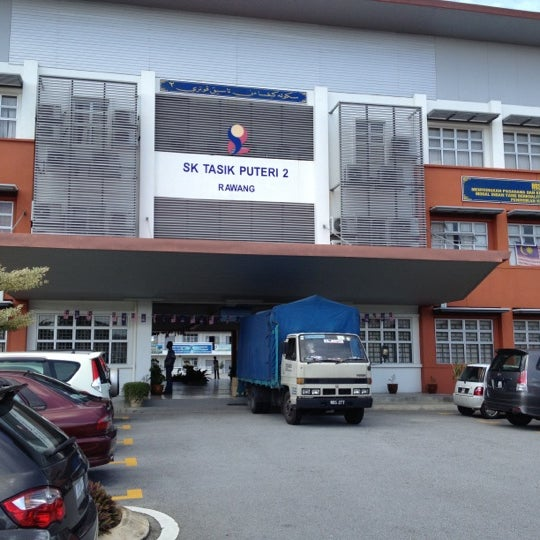
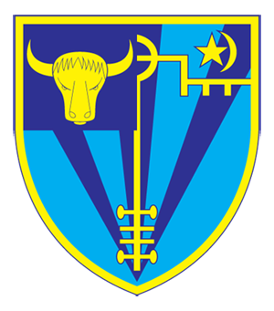
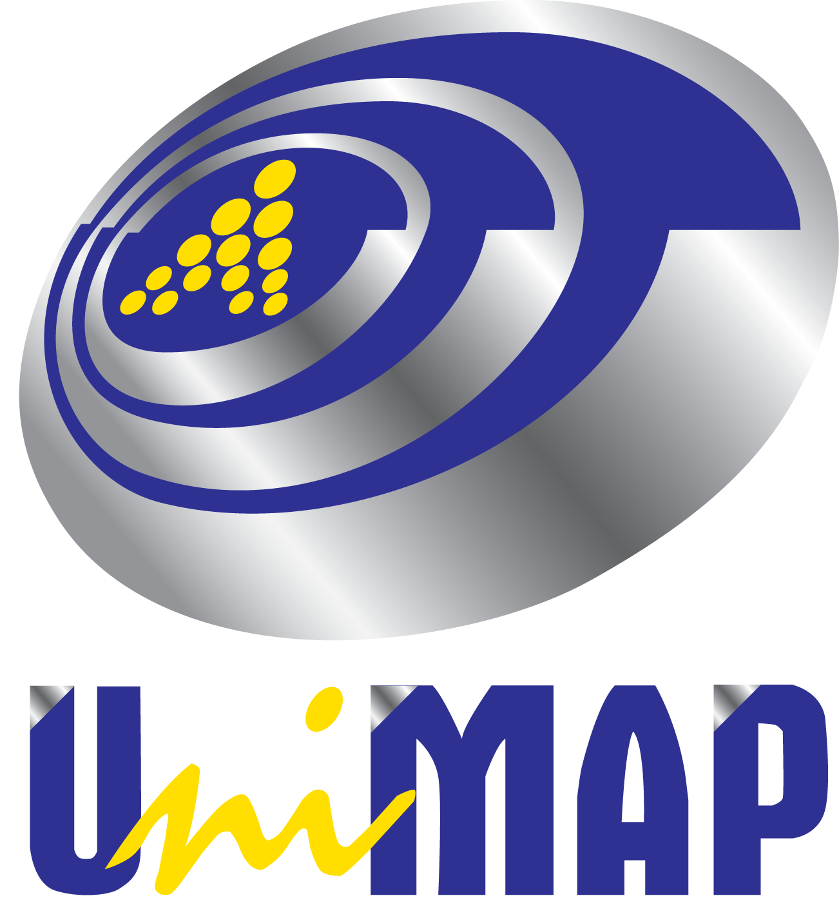

A journey through empty halls, silent pain, and fading motivation.

I started my education journey in primary school where I learned the basics of education and developed communication skills.
During secondary school, I became more active in academics, co-curricular activities, and developed my interest in technology.

I continued my studies in STPM where I improved my discipline, critical thinking, and preparation for university life.

Currently, I am studying Technology Media Interactive at UniMAP, learning web development, multimedia, and creative digital skills.